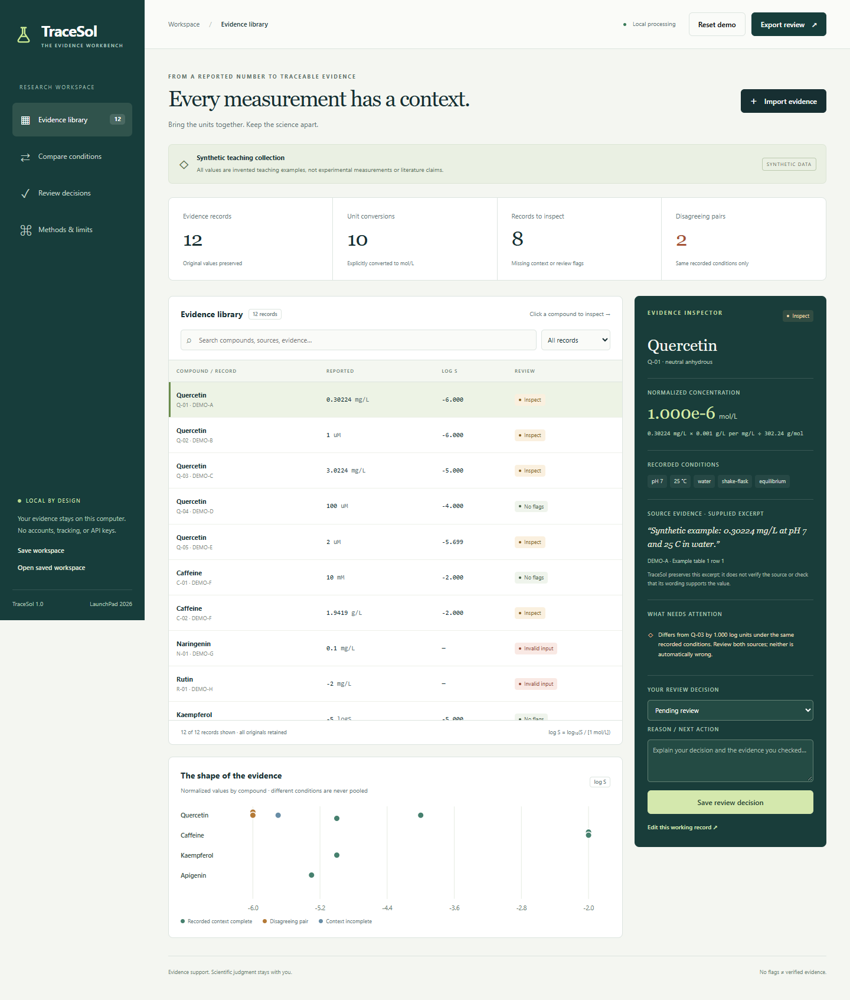

Every measurement
has a context.
Your complete local solubility evidence workbench, with source code and a no-video submission package.
Open the working app
- Extract the ZIP to a normal folder.
- On Windows, double-click START_TRACESOL.cmd. Keep its window open.
Otherwise runpython app.pyfrom this folder. Requires Python 3.10+, no package installation. - After the ready message, open the app below.
This page is the package guide. The working application needs the local Python server above. Stop it with Ctrl+C. If port 8765 is busy, use python app.py --port 8766 and open that address.
Explore the package
Setup and features · Judge walkthrough · Copy-ready Devpost text · Final submission checklist
Example offline report · Project brief PDF · Recorded validation
Demo values are synthetic. TraceSol does not verify sources, predict solubility, or make records model-ready. Save an editable workspace before closing or replacing your working data.

Created 8 November 2026 with disclosed AI development assistance. Source and a downloadable build are available at https://github.com/nbach-hoang/tracesol. The app runs locally; eligibility and final Devpost submission have not been verified.